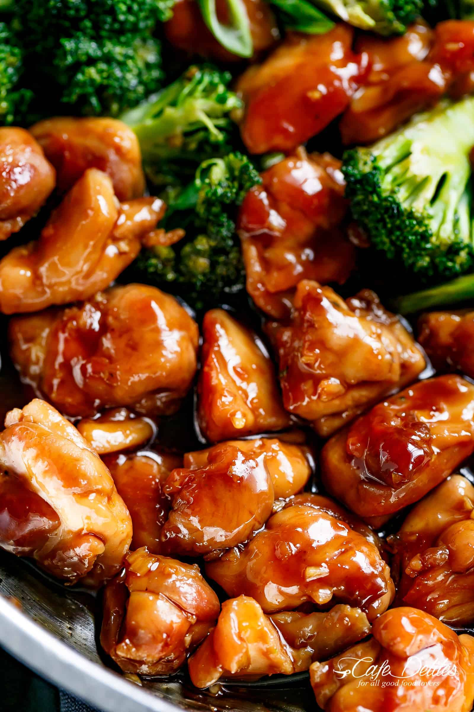

Teriyaki Chicken

Description
A delicously sweet teriyaki chicken cooked to perfection
Ingredients
- 2LB chicken thighs
- 1 cup soysauce
- 1/2 cup brown sugar
Steps
- Sear the chicken thighs evenly in a pan, then flip.
- Add the soy sauce and brown sugar, stirring and bringing to a boil.
- Stir until the sauce has reduced and evenly glazes the chicken.
- Serve with rice, if desired!